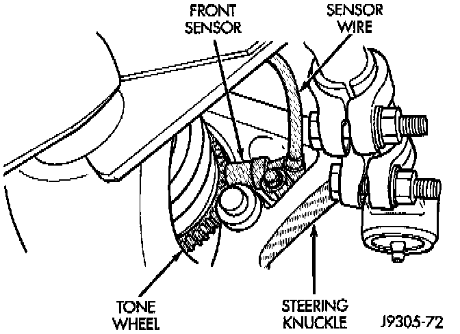
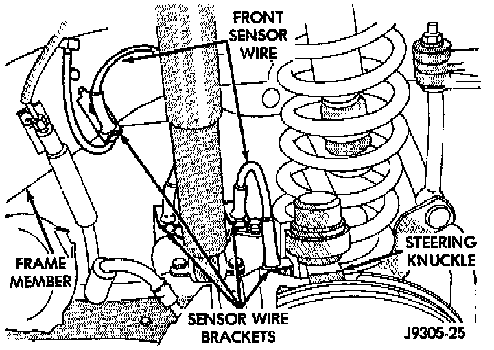
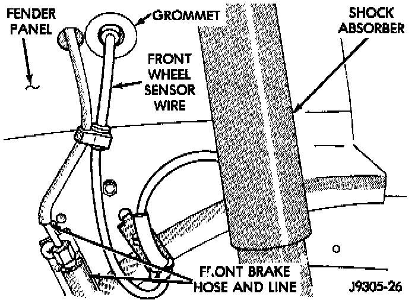

Front
REMOVAL1. Turn ignition switch to OFF position.
2. Raise vehicle.
3. Remove wheel and tire assembly.
Front Wheel Speed Sensor:

4. Remove bolt attaching front sensor to steering knuckle.


5. Disengage sensor wire from brackets on steering knuckle and frame member.
6. Unseat grommet that secures sensor wire in fender panel.
7. In engine compartment, disconnect sensor wire connector at harness plug.
8. Remove sensor and wire assembly.
INSTALLATION
1. Apply Mopar Lock N' Seal or Loctite 242 to sensor attaching bolt. Use new sensor bolt if original bolt is worn or damaged.
2. Position sensor on steering knuckle. Seat sensor locating tab in hole in knuckle and install sensor attaching bolt finger tight.
3. Tighten sensor bolt to 14 Nm (11 ft. lbs.).
4. Route sensor wire from steering knuckle to fender panel.
5. Engage grommets on sensor wire in brackets on body, chassis, frame, and steering knuckle.
6. Check sensor wire routing. Be sure wire is clear of all chassis components and is not twisted or kinked at any spot.
7. Seat sensor wire in body grommet and seat grommet in fender panel.
8. Connect sensor wire to harness in engine compartment.